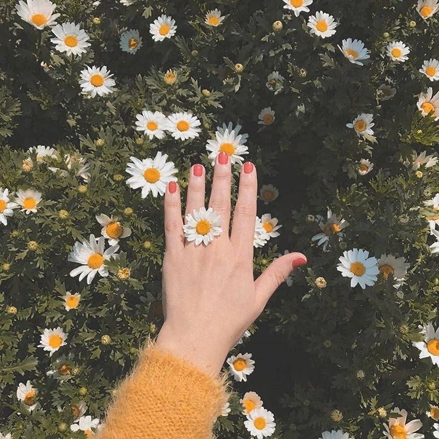

Bunga atau kembang adalah alat reproduksi seksual pada tumbuhan berbunga. Pada bunga terdapat organ reproduksi, yaitu benang sari dan putik. Bunga dapat muncul secara tunggal maupun bersama-sama dalam satu
rangkaian. Bunga yang muncul secara bersama-sama disebut sebagai bunga majemuk atau inflorescence.
1. Membantu mengurangi stres
Sebuah studi yang diterbitkan oleh Journal of Physiological Anthropology menemukan bahwa tanaman hias dalam rumah atau kantor dapat membuat Anda lebih nyaman dan tenang.
2. Membantu agar lebih fokus
Meskipun penampilannya serupa, manfaat merawat tanaman hias ternyata lebih baik bagi tubuh daripada sekadar menaruh tanaman palsu sebagai pajangan. Hal ini dibuktikan melalui sebuah studi sederhana yang diterbitkan
oleh International Journal of Environmental Research and Public Health terhadap 24 orang murid sekolah dasar. Siswa-siswa tersebut dimasukkan ke dalam beberapa ruang kelas yang berbeda. Ada ruang kelas yang terdapat
tanaman hias asli, tanaman palsu, foto tanaman, atau tidak ada tanaman sama sekali. Kemudian otak mereka diamati dengan alat electroencephalography (EEG) pada saat belajar di masing-masing ruangan tersebut. Ternyata,
siswa memiliki fokus yang lebih baik dan lebih mudah berkonsentrasi saat mereka berada di ruangan yang memiliki tanaman yang hidup daripada di ruang lainnya.
3. Membantu mengatasi beberapa gangguan mental
Sebagai terapi untuk mengatasi masalah kejiwaan juga merupakan salah satu manfaat dari merawat tanaman di rumah. Menurut studi dari Cambridgeshire and Peterborough NHS Foundation, memelihara tanaman dapat membantu
memperbaiki suasana hati pada penderita depresi, demensia, anxiety, dan gangguan mental lainnya. Meskipun kegiatan berkebun sudah dilakukan sejak masa lampau, para ahli terapi mental semakin serius memasukkan kegiatan
tersebut sebagai kegiatan terapi yang disarankan.
4. Membantu proses pemulihan setelah sakitl
Setelah sakit, Anda mungkin tidak bisa langsung memelihara tanaman. Akan tetapi, jangan khawatir, ternyata dengan melihatnya saja sudah cukup membantu proses pemulihan tubuh. Hal ini dibuktikan melalui sebuah riset
sederhana yang dilakukan oleh Journal of Alternative and Complementary Medicine terhadap beberapa pasien yang baru saja menjalani operasi. Hasilnya menunjukkan bahwa mereka yang melihat tanaman saat masa pemulihan
ternyata memiliki kondisi yang lebih cepat stabil daripada yang tidak melihat tanaman.
No
Jenis Bunga
Harga
1
Mawar
Rp.15.000/Bucket
2
Melati
Rp.10.000/Bucket
3
Angrek
Rp.100.000/Bucket

Daisy Flower
Bunga yang satu ini diartikan sebagai lambang kemurnian dan kepolosan.